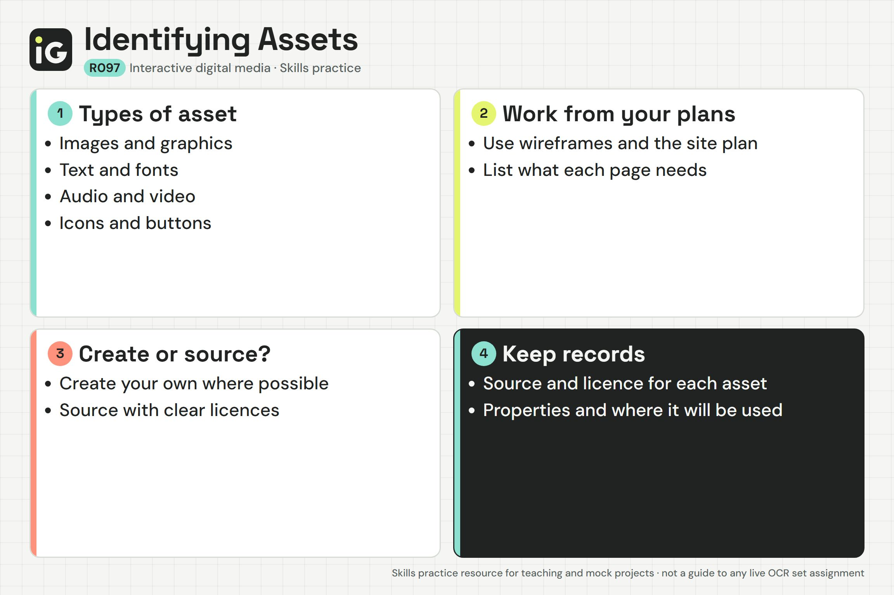

Why this asset?
- What it adds for the user

Identify assets you need, where they come from, and why you need them.
In this section you must identify all the assets you will need to build your IDMP (website). Use your wireframe diagrams to spot every image, icon, video, audio file, and download that will appear on each page.
An asset is any file or piece of content your website needs to look and work as planned. Assets can be:
You should create a folder called Assets inside your project folder. This is where you will store everything you collect or create ready for building your website.
Tip: Keep your files organised now to save time later. Use clear names like logo.png, hero-banner.jpg, gallery-01.jpg, quiz-icon.svg.
An asset list shows everything you need to collect, download, or create. This list should come directly from your wireframes.
Remember: If it appears on your wireframes, it should appear on your asset list.
Use this checklist to make sure you can cover every part of this topic.
List what each screen needs, why, and the properties it must have. Then search using filters for size, type and licence.